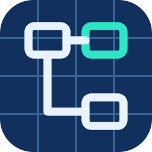

Blueprint WikiLooking for Blueprint Wiki...
Blueprint Wiki is a small program that keeps your pages, diagrams and files, so it has to be started first.
No icon? Open a Terminal and type:bash ~/Desktop/"My Apps"/apps/blueprint-wiki/start.sh
On Windows, double-click Start Blueprint Wiki (Windows).bat in this folder instead.
This page keeps checking and jumps to Blueprint Wiki as soon as it's running.